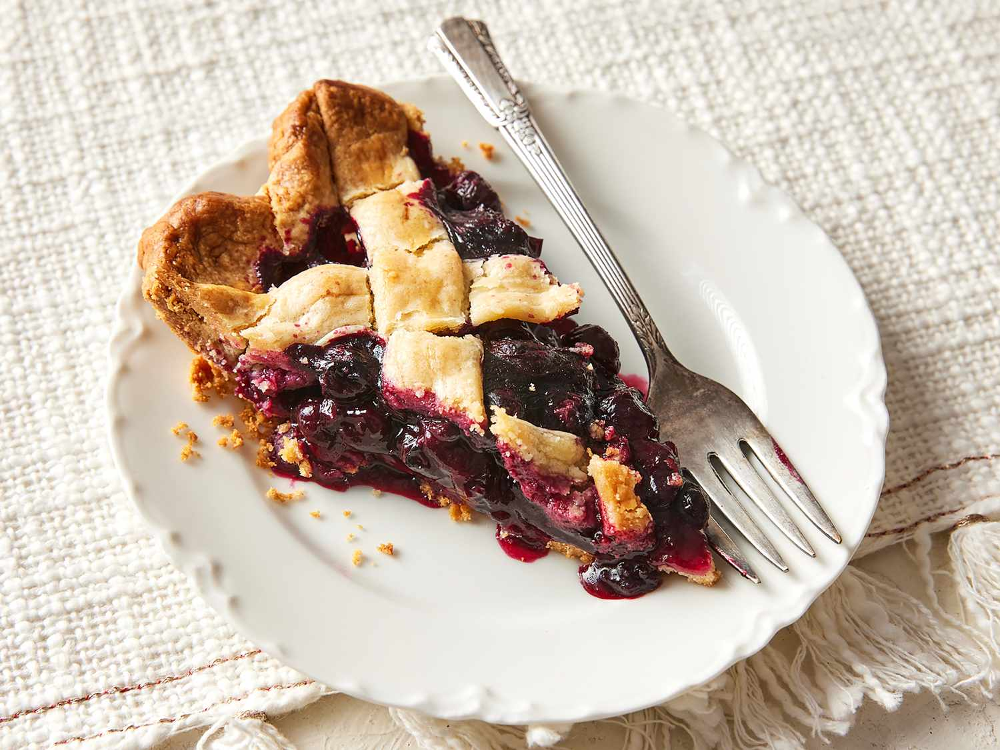

Fairygodmummy's Blueberry pie

Wanna have a bite??
Cinderella had a fairy godmother that was there to make her signature
blueberry pie. Do you have one?
Worry not! Make one yourself!
INGREDIENTS
For the Dough
- All-purpose flour
- Shortening, butter, or lard
- Cold water
- Salt
For the Blueberry Filling
- Blueberries
- Sugar
- Flour
- Lemon juice and zest
STEPS
- Preheat oven to 200°C (400°F).
- Make filling: Mix 3 cups blueberries, ½ cup sugar, 2 tbsp cornstarch, 1 tsp lemon juice, pinch of salt.
- Prepare pie crust: Line a pie dish with bottom crust.
- Add filling: Pour the blueberry mixture into the crust.
- Top crust: Cover with second crust (or lattice style), seal edges, and cut slits for steam.
- Brush top with egg wash or milk, sprinkle some sugar.
- Bake 40-45 mins, until golden and bubbling
- Cool completely before slicing (helps set the filling).
Home